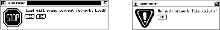

The confirmer is a window where the graphical user interface
displays important information or requires the user to confirm
destructive operations. The confirmer always appears in the middle of
the screen and blocks XGUI until a button of the confirmer is
clicked (see figure  ).
).